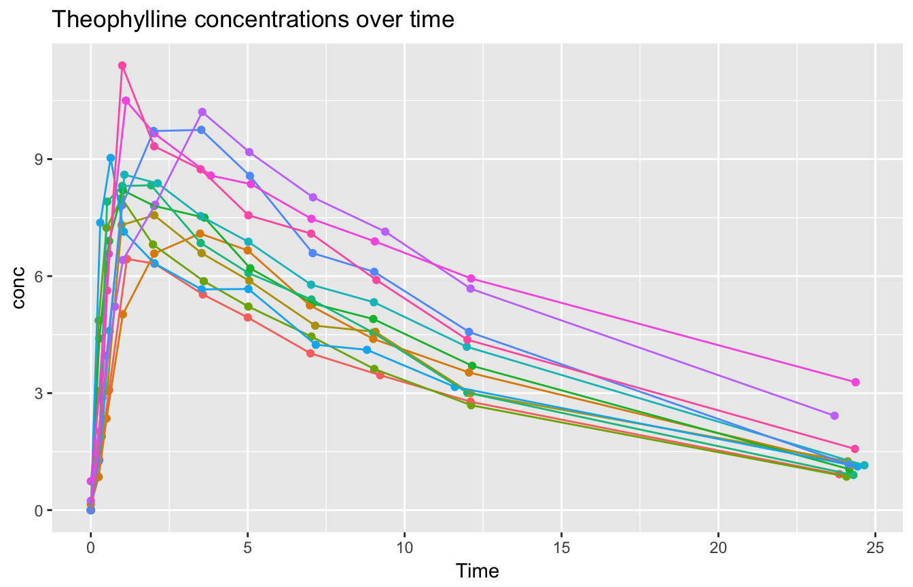

This vignette shows an example use of y-stratified sampling with a grouping restriction in vtreat.
For this example, we will use the Theosph dataset: data from an experiment on the pharmacokinetics of theophylline. We will demonstrate the desired effects of y-stratification while also respecting a grouping constraint.
First, let’s look at the data.
# panel data for concentration in multiple subjects
d <- datasets::Theoph
head(d)## Subject Wt Dose Time conc
## 1 1 79.6 4.02 0.00 0.74
## 2 1 79.6 4.02 0.25 2.84
## 3 1 79.6 4.02 0.57 6.57
## 4 1 79.6 4.02 1.12 10.50
## 5 1 79.6 4.02 2.02 9.66
## 6 1 79.6 4.02 3.82 8.58summary(d)## Subject Wt Dose Time
## 6 :11 Min. :54.60 Min. :3.100 Min. : 0.000
## 7 :11 1st Qu.:63.58 1st Qu.:4.305 1st Qu.: 0.595
## 8 :11 Median :70.50 Median :4.530 Median : 3.530
## 11 :11 Mean :69.58 Mean :4.626 Mean : 5.895
## 3 :11 3rd Qu.:74.42 3rd Qu.:5.037 3rd Qu.: 9.000
## 2 :11 Max. :86.40 Max. :5.860 Max. :24.650
## (Other):66
## conc
## Min. : 0.000
## 1st Qu.: 2.877
## Median : 5.275
## Mean : 4.960
## 3rd Qu.: 7.140
## Max. :11.400
## We have twelve subjects, who each received a dose of the anti-asthma drug theophylline. The theophylline concentration in the patients’ blood was then measured at eleven points during the next 25 hours. Most of the patients got about the same dose, although the dose information reported in the dataset is normalized by weight.
if(have_ggplot) {
ggplot(d, aes(x=Time, y=conc, color=Subject)) +
geom_point() + geom_line() +
theme(legend.position="none") +
ggtitle("Theophylline concentrations over time")
}
Suppose we wanted to fit a model to analyze how a patient’s weight affects how theophylline is metabolized, and validate that model with three-fold cross-validation. It would be important that all readings from a given patient stay in the same fold. We might also want the population in each fold to have similar distributions of theophylline concentrations curves.
Recall that the goal of y-stratification is to insure that all samples from the data have as close to identical y distributions as possible. This becomes more difficult when we also have to obey a grouping constraint.
Let’s look at three ways of splitting the data into folds. First, we will split the data arbitrarily into three groups, using the modulo of the Subject id to do the splitting.
# a somewhat arbitrary split of patients
subnum = as.numeric(as.character(d$Subject))
d$modSplit = as.factor(subnum %% 3)We can verify that this split preserves groups, by looking at the table of subject observations in each fold. Each subject should only appear in a single fold.
print(table(Subject=d$Subject, groupid=d$modSplit))## groupid
## Subject 0 1 2
## 6 11 0 0
## 7 0 11 0
## 8 0 0 11
## 11 0 0 11
## 3 11 0 0
## 2 0 0 11
## 4 0 11 0
## 9 11 0 0
## 12 11 0 0
## 10 0 11 0
## 1 0 11 0
## 5 0 0 11Now let’s try the standard y stratification in vtreat.
# stratify by outcome only
# forces concentration to be equivalent
pStrat <- kWayStratifiedY(nrow(d),3,d,d$conc)
attr(pStrat, "splitmethod")## [1] "kwaycrossystratified"d$stratSplit <- vtreat::getSplitPlanAppLabels(nrow(d),pStrat)
print(table(Subject=d$Subject, groupid=d$stratSplit))## groupid
## Subject 1 2 3
## 6 4 4 3
## 7 4 6 1
## 8 3 4 4
## 11 1 5 5
## 3 3 2 6
## 2 5 2 4
## 4 3 3 5
## 9 5 4 2
## 12 3 4 4
## 10 6 2 3
## 1 2 5 4
## 5 5 3 3We can see this partition didn’t preserve the Subject grouping.
Finally, we can try vtreat’s group-preserving split, which also tries to y-stratify as much as possible (by stratifying on the mean y observation from each group).
# stratify by patient and outcome
# allows concentration to vary amoung individual patients
splitter <- makekWayCrossValidationGroupedByColumn('Subject')
split <- splitter(nrow(d),3,d,d$conc)
attr(split, "splitmethod")## [1] "kwaycrossystratifiedgrouped"d$subjectSplit <- vtreat::getSplitPlanAppLabels(nrow(d),split)
print(table(Subject=d$Subject, groupid=d$subjectSplit))## groupid
## Subject 1 2 3
## 6 11 0 0
## 7 0 0 11
## 8 0 11 0
## 11 0 11 0
## 3 11 0 0
## 2 0 0 11
## 4 0 11 0
## 9 11 0 0
## 12 0 0 11
## 10 11 0 0
## 1 0 11 0
## 5 0 0 11This is again a subject-preserving partition.
We can compare the mean theophylline concentration and the average pharmacokinetic profile for each fold, for both of the subject-preserving partitions. We see that the stratification reduces some of the variation between folds.